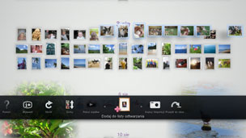

Tworzenie Lista odtwarzania wybranych zdjęć
Z wybranych zdjęć można utworzyć listę odtwarzania. Lista odtwarzania pozwala wyświetlać wybrane zdjęcia w określonej kolejności.
Tworzenie listy odtwarzania
1. |
Na ekranie [Obszar biblioteki] wybierz zdjęcie, które chcesz dodać do listy odtwarzania, naciśnij przycisk  |
||||||||||||
|---|---|---|---|---|---|---|---|---|---|---|---|---|---|
2. |
Używając lewego drążka, przejdź do pustego obszaru ekranu [Obszar listy odtwarzania], a następnie naciśnij przycisk |
||||||||||||
3. |
Określ poniższe opcje listy odtwarzania.
|
 (Dodaj do listy odtwarzania).
(Dodaj do listy odtwarzania). .
.
 (Muzyka) na ekranie XMB™ muzyki odtwarzanej w tle podczas wyświetlania pokazu slajdów.
(Muzyka) na ekranie XMB™ muzyki odtwarzanej w tle podczas wyświetlania pokazu slajdów.Wskazówki
- Ustawienia listy odtwarzania można później edytować w kategorii
 (Edytuj).
(Edytuj). - Każda lista odtwarzania może mieć inne ustawienia.
Dodawanie zdjęć do listy odtwarzania
1. |
Wybierz zdjęcia, które chcesz dodać do listy odtwarzania, naciśnij przycisk |
|---|---|
2. |
Wybierz listę odtwarzania, a następnie naciśnij przycisk |
Edytowanie ustawień Lista odtwarzania
Ustawienia listy odtwarzania można edytować. W tym celu wybierz listę odtwarzania, którą chcesz edytować, naciśnij przycisk  , a następnie wybierz opcję (Edytuj).
, a następnie wybierz opcję (Edytuj).
Przenoszenie listy odtwarzania
Listę odtwarzania można przenieść w inne miejsce. Wybierz listę odtwarzania, którą chcesz przenieść, naciśnij przycisk , a następnie wybierz opcję  (Przenieś). Listę odtwarzania można przenieść przy użyciu lewego drążka.
(Przenieś). Listę odtwarzania można przenieść przy użyciu lewego drążka.
Wskazówka
Listę odtwarzania można również przenieść bez korzystania z menu. Wybierz listę odtwarzania, a następnie naciśnij i przytrzymaj przycisk  , przenosząc w tym czasie listę odtwarzania za pomocą lewego drążka.
, przenosząc w tym czasie listę odtwarzania za pomocą lewego drążka.
Usuwanie listy odtwarzania
Aby usunąć listę odtwarzania, wybierz tę listę, którą chcesz usunąć, naciśnij przycisk , a następnie wybierz opcję  (Usuń).
(Usuń).